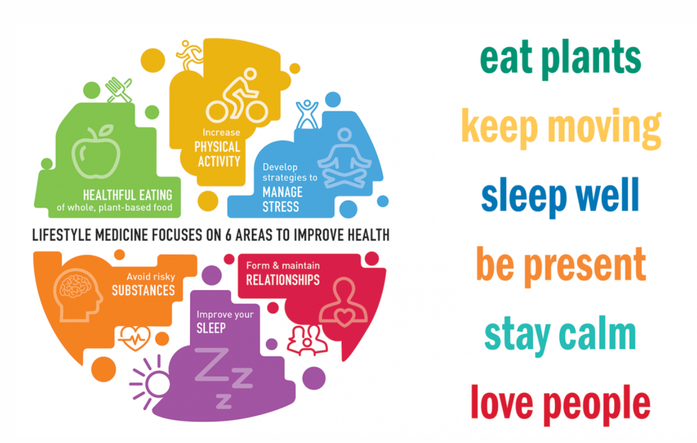

This Website is about medical lifestyle The nursing medical lifestyle refers specifically to the lifestyle associated with the nursing profession. It encompasses various aspects of a nurse's professional and personal life, shaped by the demands and responsibilities of their work in healthcare settings. Some key features of the nursing medical lifestyle include:
Lifestyle medicine focuses on educating and motivating patients to improve the quality of their lives by changing personal habits and behaviors around the use of healthier diets which minimize ultra-processed foods such as a Mediterranean diet or whole food, plant-predominant dietary patterns. Poor lifestyle choices like dietary patterns, physical inactivity, tobacco use, alcohol addiction and dependence, drug addiction and dependence, as well as psychosocial factors, e.g. chronic stress and lack of social support and community, contribute to chronic disease.In the clinic, major barriers to lifestyle counseling are that physicians feel ill-prepared and are skeptical about their patients' receptivity.However, by encouraging healthy decisions, illnesses can be better managed, reversed, or prevented in the long term.
Medical lifestyle" typically refers to the overall lifestyle, habits, and routines of individuals who work in the medical profession. This includes doctors, nurses, surgeons, and other healthcare professionals. The medical lifestyle encompasses various aspects of both professional and personal life that are influenced by the demands and responsibilities of working in healthcare. Overall, the medical lifestyle encompasses the unique challenges, rewards, and responsibilities associated with working in the healthcare field. It requires dedication, resilience, and a commitment to both professional excellence and personal well-being.